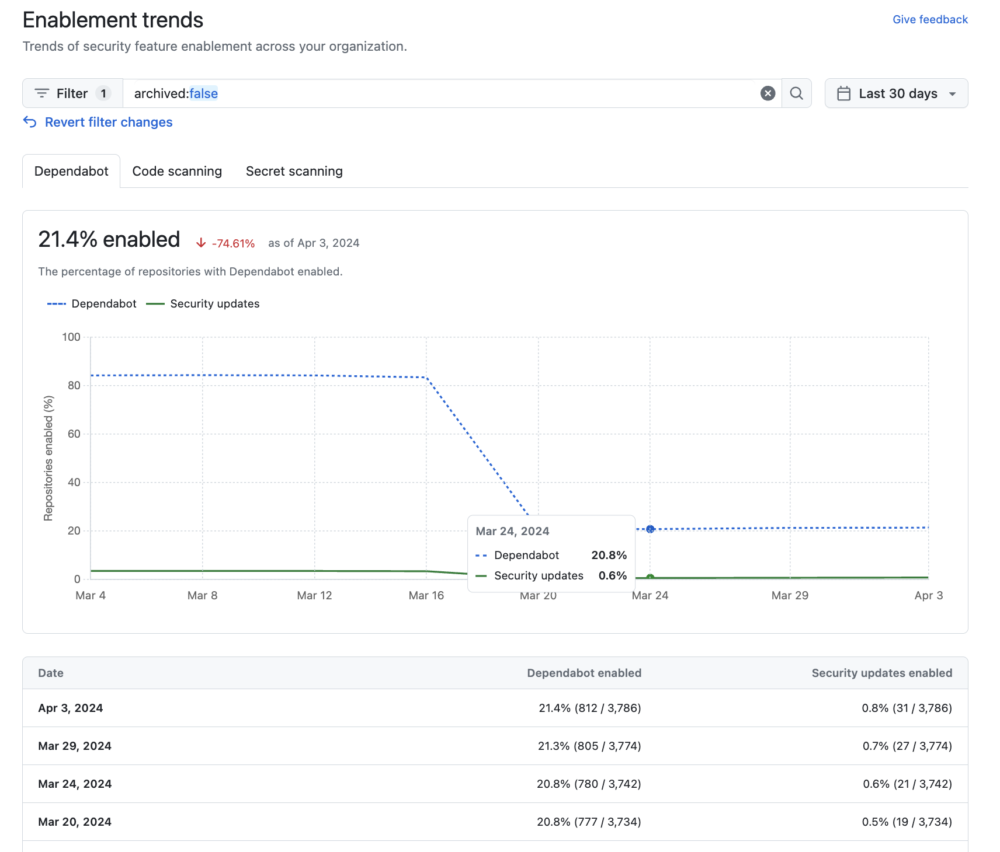

See which teams and repositories have already enabled features for secure coding, and identify any that are not yet protected.
You can use security overview to see which repositories and teams have already enabled each security feature, and where people need more encouragement to adopt these features.
Note
"Pull request alerts" are reported as enabled only when code scanning has analyzed at least one pull request since alerts were enabled for the repository.
You can view data to assess the enablement of features for secure coding across repositories in an organization.
You can view data to assess the enablement of security features across organizations in an enterprise.
Use the Teams dropdown to show information only for the repositories owned by one or more teams. For more information, see Managing team access to an organization repository.
Click NUMBER enabled or NUMBER not enabled in the header for any feature to show only the repositories with that feature enabled or not enabled.
At the top of the list of repositories, click NUMBER Archived to show only repositories that are archived.
Click in the search box to add further filters to the repositories displayed.
Tip
You can use the owner filter in the search field to filter the data by organization. For more information, see Filtering alerts in security overview.
You can view data to assess the enablement status and enablement status trends of security features for an organization.
Use the date picker to set the time range that you want to view enablement trends for.
Click in the search box to add further filters on the enablement trends displayed. The filters you can apply are the same as those for the "Overview" dashboard view. For more information, see Filtering alerts in security overview.

You can view data to assess the enablement status and enablement status trends of security features across organizations in an enterprise.
Tip
You can use the owner: filter in the search field to filter the data by organization. For more information, see Filtering alerts in security overview.
After you have reviewed enablement coverage, consider the following actions.
Check if your enterprise has configured overly restrictive policies that limit the use of security features. See Enforcing policies for code security and analysis for your enterprise.
Enable features that should be enabled on all repositories. For information on enabling features for a whole organization, see Configuring security features in your organization.
For example, secret scanning alerts and push protection reduce the risk of a security leak no matter what information is stored in the repository. If you see repositories that don't already use these features, you should either enable them or discuss an enablement plan with the team who owns the repository.
For other features, consider whether the feature should be enabled in more repositories. For example, there would be no point in enabling Dependabot for repositories that only use ecosystems or languages that are unsupported. As such, it's normal to have some repositories where these features are not enabled.
You can download a CSV file of the data displayed on the "Security coverage" page. This data file can be used for efforts like security research and in-depth data analysis, and can integrate easily with external datasets. See Exporting data from security overview.
You can use the "Enablement trends" view to see enablement status and enablement status trends over time for Dependabot, code scanning, or secret scanning across repositories or organizations. See Viewing enablement trends for an organization or Viewing enablement trends for an enterprise.